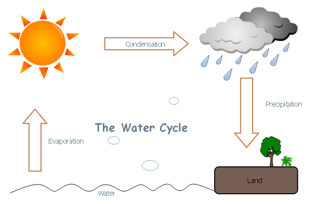
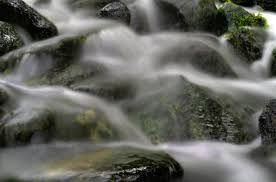
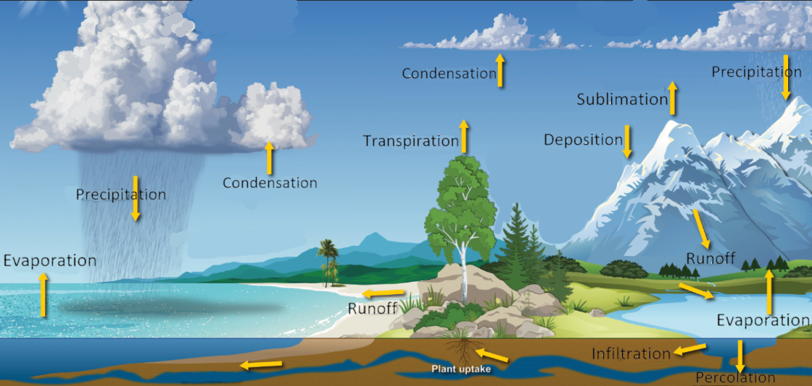

Water Cycle
Water Cycle Summary. In the Water Cycle, water moves from the earth’s surface into the
atmosphere and back to the earth’s surface. This cycle is very important to plants and animals as
well as the other cycles on the earth.
Radiation from the Sun provides the energy for the processes to occur.
When we first start learning the water cycle as children we learn about three processes that cause the Water
Cycle:
Let’s get into the different processes, which are happening all the time.
Evaporation. Let’s start with evaporation. Water is on the earth’s surface, in oceans, lakes, rivers,
streams, puddles, and so on. How does it return to the atmosphere?

Evaporation takes place when water molecules have enough energy of motion to break free from other molecules that
make up the liquid or solid and go into the air as water vapor. Radiation from the Sun is the main source of
energy for the process of evaporation.
The process of liquid water moving into the atmosphere in the form of water vapor, which is water in the gas
state, is called evaporation (notice “vapor” in this word?).
There are different conditions that affect how fast the water evaporates. Some of these include the temperature of
both the air and the water, the amount of water vapor in the air (which we call humidity) and the size of
the surface exposed. There must be energy present for evaporation to occur. In the case of your body and
perspiration, the heat from your skin, Sun, and energy of air molecules all can cause your sweat to evaporate.
Because high-energy (very fast-moving) molecules of sweat leave your body, your body loses energy and cools.
Note: Water vapor can also get into the atmosphere when the H2O molecules of a solid material such as ice or
snow go directly to a gas state. This is called sublimation. The H2O molecules that make the ice or snow at the
top of mountains may gain enough energy from the Sun to escape into the atmosphere as a gas.
But evaporation is the main way that water vapor gets into the atmosphere in the water cycle.
Condensation. Now that we have all this water vapor (or water in its gas form) in the atmosphere, what
happens next? You may remember that each water molecule (H2O) is like a little tiny magnet, which attracts other
H2O molecules because of the electric force.
As the water vapor rises in the Earth’s atmosphere, it loses kinetic energy as it collides with slower-moving
molecules in the atmosphere and slows down. As a result of losing kinetic energy, the water vapor cools.
As a result of cooling, the H2O molecules can move closer together, becoming more dense, and form what we can see
as clouds. This process of the water cycle is called, you guessed it, condensation (notice “dense” in the word?).
In other words, clouds are formed when warm moist air rises, loses energy of motion, and cools in the atmosphere.
The water vapor found in the air condenses forming small water droplets that make clouds. There are many types of
clouds,
associated with different types of precipitation.
NOTE: If you would like to see the process of condensation in action, hold a mirror in front of your mouth and
exhale on it. Do you see the “cloud” of moisture forming on the mirror? This is moisture from your breath; the
molecules are captured on the mirror where they condense (gather closer together) and turn from a gaseous state
(you can’t see) to a liquid state (that you can see on the mirror).
Precipitation. As the evaporating water vapor cools, it forms liquid water or solid water (ice) in clouds.
When the collection of water becomes too dense to be held up in the atmosphere, it falls to the Earth’s surface as
rain, hail, sleet, snow, etc. We call this precipitation.
The form of the precipitation (if it’s rain, hail, sleet, or snow) depends on the conditions of the atmosphere.
These conditions include the temperature and the amount of wind.
Note: Another example of evaporation and precipitation is seen when we place water in a pan, put a lid on the
pan and heat it. When the heated molecules of water break free in the form of a gas, they become trapped on the
lid of the pan. The H2O molecules condense and turn back into liquid form then “rain” back down into the pan.
Back on the Earth’s surface. The precipitation falls to the Earth’s surface, where it may join other water
in lakes, rivers, streams (like shown below), and oceans. The precipitation could also land on surfaces such as mountain tops in the
form of snow if very high in the mountains or on land it’s colder.

This water is also absorbed into the earth’s
surface becoming ground water. If there is more precipitation than the Earth’s surface can absorb, the
water may also form little puddles or streams. This is called surface runoff.
Water absorption. If you want to see a very simple example of saturation you can take a dry sponge and
place it on a plate. Slowly pour water on the sponge. The sponge will absorb the water until
it can't absorb or hold any more water. The sponge has reached its “saturation
point”. After the saturation point, the sponge does not absorb any more water. This also happens when the
ground or soil can no longer hold any more water. Think about a time when there has been rain for several days in
a row. At first the soil absorbs the water. Eventually, the water will lie on the top of the soil and not be
absorbed into it, resulting in surface runoff.
Summary. A summary of the processes related to the Water Cycle are shown in the picture below. This picture
includes several words that were italicized in this unit, which were additional processes of the water cycle.

Table of Contents: Water Cycle